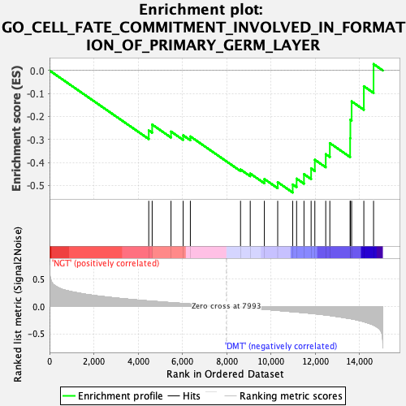

| | | Dataset | Diabetes_collapsed_symbols.Diabetes.cls#NGT_versus_DMT |
| Phenotype | Diabetes.cls#NGT_versus_DMT |
| Upregulated in class | DMT |
| GeneSet | GO_CELL_FATE_COMMITMENT_INVOLVED_IN_FORMATION_OF_PRIMARY_GERM_LAYER |
| Enrichment Score (ES) | -0.53065723 |
| Normalized Enrichment Score (NES) | -1.6859974 |
| Nominal p-value | 0.009345794 |
| FDR q-value | 1.0 |
| FWER p-Value | 0.988 |
Table: GSEA Results Summary

Fig 1: Enrichment plot: GO_CELL_FATE_COMMITMENT_INVOLVED_IN_FORMATION_OF_PRIMARY_GERM_LAYER
Profile of the Running ES Score & Positions of GeneSet Members on the Rank Ordered List
| PROBE | DESCRIPTION
(from dataset) | GENE SYMBOL | GENE_TITLE | RANK IN GENE LIST | RANK METRIC SCORE | RUNNING ES | CORE ENRICHMENT | | 1 | KLF4 | na | | | 4482 | 0.102 | -0.2606 | No |
| 2 | EYA1 | na | | | 4636 | 0.097 | -0.2351 | No |
| 3 | PAX2 | na | | | 5487 | 0.071 | -0.2655 | No |
| 4 | EYA2 | na | | | 6036 | 0.054 | -0.2819 | No |
| 5 | HOXA11 | na | | | 6361 | 0.045 | -0.2868 | No |
| 6 | BMP4 | na | | | 8627 | -0.019 | -0.4306 | No |
| 7 | SIX2 | na | | | 9066 | -0.031 | -0.4482 | No |
| 8 | BMPR1A | na | | | 9704 | -0.051 | -0.4720 | No |
| 9 | SOX2 | na | | | 10306 | -0.071 | -0.4857 | No |
| 10 | POU5F1 | na | | | 10983 | -0.095 | -0.4957 | Yes |
| 11 | SOX17 | na | | | 11160 | -0.101 | -0.4702 | Yes |
| 12 | FGFR1 | na | | | 11493 | -0.113 | -0.4508 | Yes |
| 13 | DKK1 | na | | | 11816 | -0.126 | -0.4259 | Yes |
| 14 | GATA6 | na | | | 11984 | -0.132 | -0.3883 | Yes |
| 15 | NANOG | na | | | 12476 | -0.154 | -0.3640 | Yes |
| 16 | FZD7 | na | | | 12661 | -0.164 | -0.3157 | Yes |
| 17 | ELF5 | na | | | 13577 | -0.222 | -0.2949 | Yes |
| 18 | FOXC2 | na | | | 13588 | -0.222 | -0.2137 | Yes |
| 19 | CTNNB1 | na | | | 13645 | -0.226 | -0.1343 | Yes |
| 20 | ETS2 | na | | | 14197 | -0.278 | -0.0685 | Yes |
| 21 | TRIM15 | na | | | 14636 | -0.341 | 0.0279 | Yes |
Table: GSEA details [plain text format]
Fig 2: GO_CELL_FATE_COMMITMENT_INVOLVED_IN_FORMATION_OF_PRIMARY_GERM_LAYER
Blue-Pink O' Gram in the Space of the Analyzed GeneSet
Fig 3: GO_CELL_FATE_COMMITMENT_INVOLVED_IN_FORMATION_OF_PRIMARY_GERM_LAYER: Random ES distribution
Gene set null distribution of ES for GO_CELL_FATE_COMMITMENT_INVOLVED_IN_FORMATION_OF_PRIMARY_GERM_LAYER